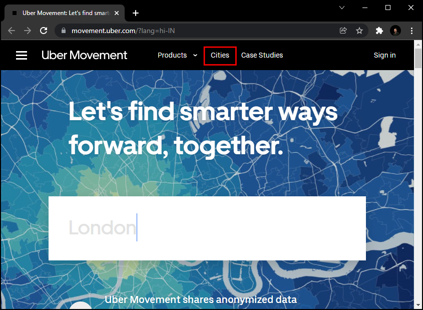
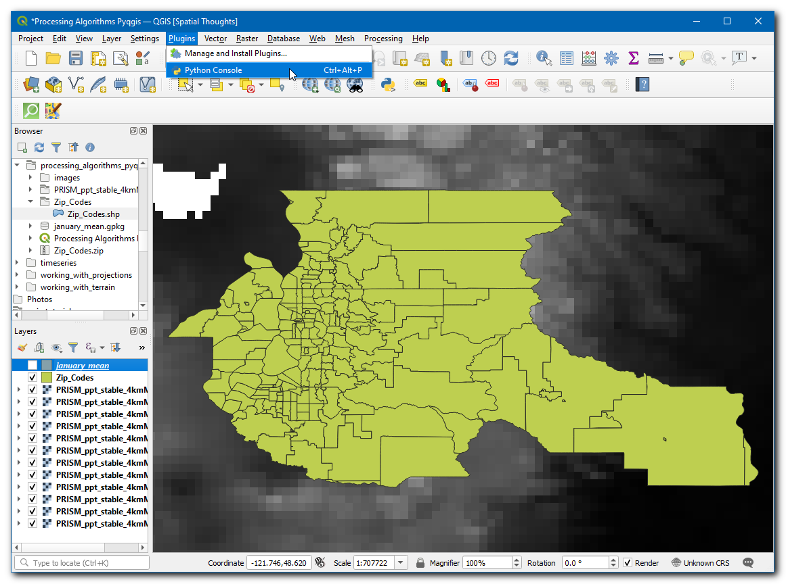
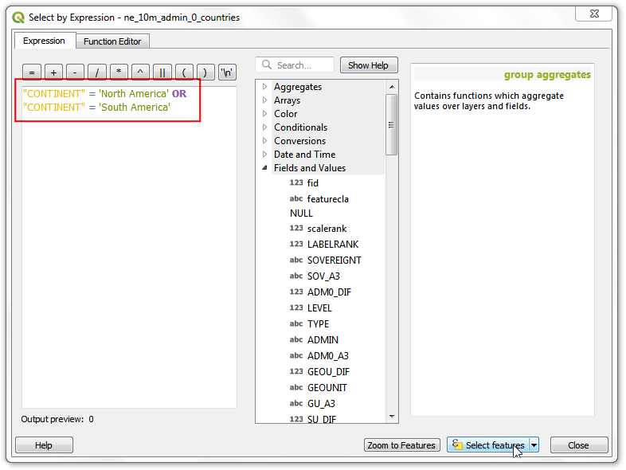
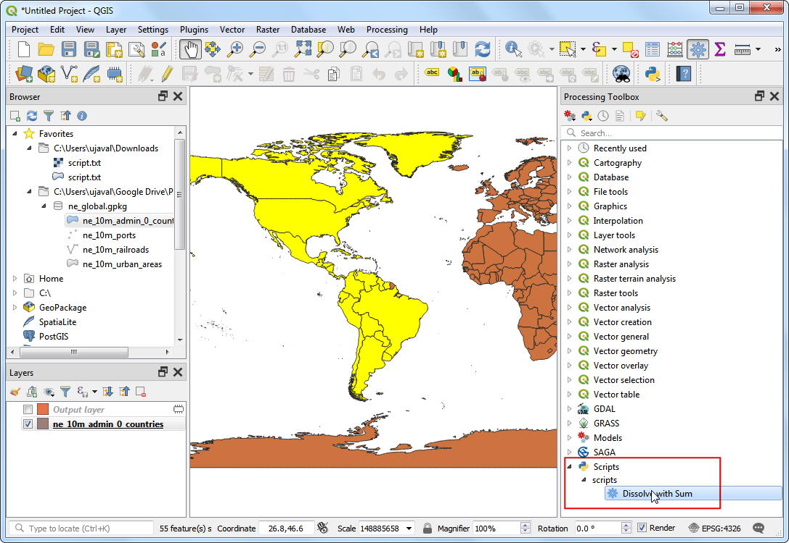
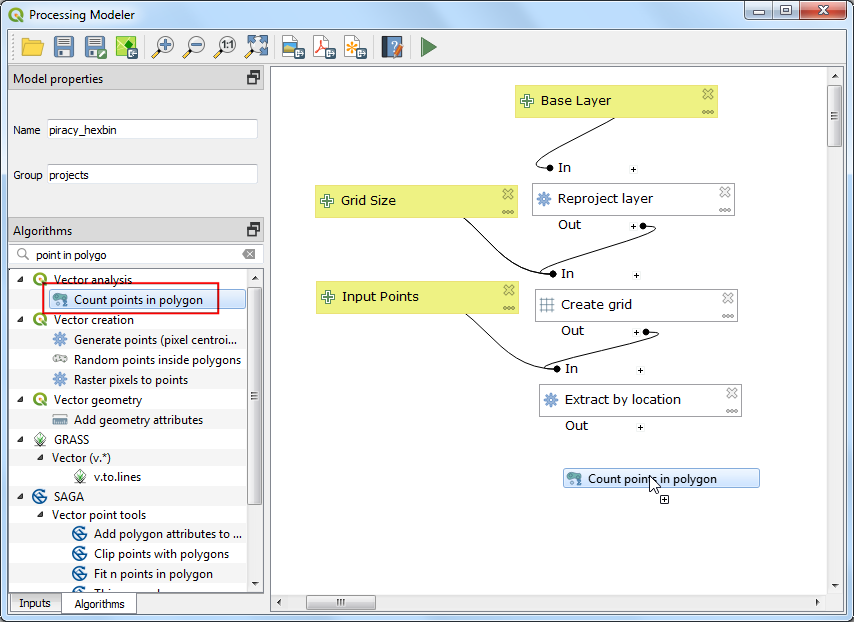

Analiza potovalnega časa z gibanjem Uberja (QGIS3)¶
Opozorilo
Uber Movement data has been discontinued [view announcement]. You can still follow the tutorial using the archive data provided in the tutorial and learn the technique of travel time analysis using QGIS.
Uber Movement deli anonimizirane in združene podatke o potovalnem času za številna mesta po svetu. Izdelek Potovalni časi podjetja Uber Movement je javna zbirka podatkov, ki meri potovanje iz območja v območje po mestu. Ti časi temeljijo na dejanskih vožnjah Uberja in so natančen prikaz zastojev in prometnih vzorcev v mestu. Gre za obsežen javno dostopen nabor podatkov, zbranih iz več milijonov dejanskih voženj s taksijem. To vodilo prikazuje tehnike za uporabo agregiranih zbirk podatkov o prometu za analizo potovalnega časa v QGIS-u.
Pregled naloge¶
Za iskanje potovalnih časov do izbrane lokacije v mestu Bangalore v Indiji bomo uporabili zbirko podatkov o prometu. Ustvarili bomo tudi Izokronski zemljevid za 30-minutni prag potovalnega časa.
Druga znanja, ki jih boste pridobili¶
Nalaganje datoteke GeoJSON v QGIS
Pridobivanje podatkov¶
Prenesli bomo nabor podatkov Travel Times za mesto Bangalore v Indiji.
Pojdite na spletno mesto Uber Movement in kliknite na Cities.

Poiščite
Banglore.

Kliknite na Download data.

V pojavnem oknu
Download datapreklopite na GEO BOUNDARIES. Vsebovala bo datoteko Banglore wards GeoJSON. Sprejmite licenčne informacije in za prenos kliknite naBANGLORE_WARDS.JSON.

Nato preklopite na
ALL DATA`. Ti podatki so na voljo od leta 2016 do 2020, vsako leto pa je razdeljeno na 4 četrtletja. Prenesli bomo podatke za 3. četrtletje leta ``2019. Izberite ga in klikniteTravel Times by Hour of Day (Weekdays Only)`. Ta datoteka bo vsebovala vse anonimne podatke o potovanju z uberjem ob delavnikih v Bangaloreju od julija do septembra 2019.

Podatke lahko prenesete s spodnjih povezav.
bangalore-wards-2019-3-OnlyWeekdays-HourlyAggregate.csv
Vir podatkov: [UBER]
Postopek¶
Poiščite datoteko
bangalore_wards.jsonna plošči Browser in jo povlecite na delovno površino. Nato bomo naložili sloj osnovne karte OpenStreetMap-a. Za dostop do osnovne karte bomo uporabili vtičnik QuickMapServices. Po namestitvi pojdite na . V projekt bo dodana plast območij osnovne karte iz OpenStreetMap-a. Nato kliknite gumb Open Data Source Manager.

Preklopite na zavihek Delimited Text. Poiščite datoteko
bangalore-wards-2019-3-OnlyWeekdays-HourlyAggregate.csvin jo izberite. Ker je ta datoteka CSV samo tabelarični podatek, izberite možnost No geometry (attribute only table) in kliknite Add.

Sloj``bangalore-wards-2019-3-OnlyWeekdays-HourlyAggregate`` bo dodan med Layers`. Ta sloj vsebuje anonimizirane in agregirane podatke o lokaciji potovanj med različnimi območji mesta. Vsaka vrstica tabele vsebuje stolpce za izvorno območje (sourceid), ciljno območje (dstid), uro dneva (hod) in povprečni potovalni čas, agregiran iz vseh potovanj med temi območji ob tej uri (mean_travel_time). Več o tem podatkovnem nizu si lahko preberete v poglavju Movement: Travel Times Calculation Methodology (pdf). Preden nadaljujemo, preverimo, koliko podatkovnih zapisov je prisotnih v sloju. Z desno tipko na miški kliknite sloj
bangalore-wards-2019-3-OnlyWeekdays-HourlyAggregatein izberite Show Feature Count`. Ob njem se bo prikazalo skupno število vrstic iz tabele. To je precej velika tabela, vendar za našo analizo ne potrebujemo vseh podatkovnih vrstic. Zdaj bomo določili našo ciljno lokacijo in filtrirali podatkovno tabelo za naš namen.

Izračunati želimo vsa območja, ki so dostopna v 30 minutah od določene lokacije. S pomočjo osnovnega zemljevida OSM Standard lahko poiščete lokacijo, ki vas zanima. Nato izberite sloj
bangalore_wards, uporabite orodje Identify in nanj kliknite. Rezultati bodo prikazali atribute območja, ki vsebuje lokacijo. Za namen te vadnice predpostavimo, da je naša ciljna lokacija v območju JP Nagar z MOVEMENT_ID 193.
Zapise o času potovanja lahko filtriramo samo na tiste, ki imajo to območje dan kot cilj. Analizo lahko omejimo tudi na največjo jutranjo uro vožnje na delo med 9. in 10. uro. Z desno tipko miške kliknite sloj
bangalore-wards-2019-3-OnlyWeekdays-HourlyAggregatein izberite Filter`.

Vnesite naslednji izraz filtra in kliknite OK.
"dstid" = 193 AND "hod" = 9
V glavnem oknu QGISa boste videli, da se je število zapisov v filtrirani tabeli zmanjšalo na 197. Ker je v mestu skupaj 198 območij, imamo zapise o potovalnih časih med 1 ciljnim območjem in 197 izvornimi območji. Tabelo atributov obeh slojev odprite z gumbom Open Attribute Table v orodni vrstici Attributes.

Zdaj imamo oblike okrožja v sloju
bangalore_wardsin tabelarne informacije v slojubangalore-wards-2019-3-OnlyWeekdays-HourlyAggregate. Atributne informacije lahko združimo z oblikami z uporabo skupnega atributa. Tukaj sta stolpecMOVEMENT_IDiz slojabangalore_wardsin stolpecsourceidiz slojabangalore-wards-2019-3-OnlyWeekdays-HourlyAggregateedinstvena identifikatorja oddelkov, ki ju lahko združimo. Ta operacija se imenuje Table Join.

Preden lahko združimo ti dve plasti, moramo zagotoviti, da se vrednosti v obeh stolpcih popolnoma ujemajo. Če sta videti enaki, sta različni vrsti. Ker format GeoJSON ne omogoča določanja vrst lastnosti, se predpostavlja, da so vse vrednosti tipa String - tj. besedilo. Toda ko uvozimo CSV v QGIS, QGIS privzeto poskuša določiti tipe stolpcev na podlagi vrednosti in dodeli ustrezen tip polja. Za datoteko CSV je bil podatkovni tip za stolpec
sourceiddodeljen kot Integer. Zato moramo stolpec iz datoteke GeoJSON prav tako pretvoriti v tip Integer. Pojdite na :menuselection:`Procesiranje –> Processing –> Toolbox –> Vector Table –> Field Calculator algorithm. Dvakrat kliknite, da ga zaženete.

Izberite
bangalore_wardskot Vhodni sloj. Ime polja poimenujte kotjoinfieldin izberite Result field type kotInteger. Kot izraz vnesiteMOVEMENT_ID. Kliknite gumb … poleg Calculated in izberite Save to File… ter vnesite ime izhodne datoteke kotbangalore_wards_fixed.gpkg. Kliknite Run. Zaprite polje kalkulatorja.

Nova plast
bangalore_wards_fixedbo dodana med Layers`. Zdaj smo pripravljeni na izvedbo združitve. Pojdite na . Z dvojnim klikom ga zaženite.

Izberite
bangalore_wards_fixedkot Vhodni sloj injoinfieldkot Tabelno polje. Izberitebangalore-wards-2019-3-OnlyWeekdays-HourlyAggregatekot Input layer 2 insourceidkot Table field 2. Plast Joined layer poimenujte kotuber_travel_times.gpkgin kliknite Run.

Nov sloj
uber_travel_timesbo dodan med Layers`. Oblikujmo ga za vizualizacijo rezultatov združevanja. Kliknite Open the Layer Styling Panel. Izberemo rendererGraduatedinmean_travel_timekot Value. Izberite barvno lestvico in kliknite Classify. Videli boste zemljevid, ki prikazuje naraščajoči potovalni čas, do bolj oddaljenega cilja.

Vendar želimo analizirati in izločiti območja, ki so oddaljena do 30 minut vožnje, zato moramo opraviti še nekaj dodatne obdelave. Preklopite oblikovanje nazaj na upodobitev Single symbol. Z desno tipko na miški kliknite sloj
uber_travel_timesin izberite Filter.

Vnesite naslednji izraz, da izberete vsa območja, ki so znotraj 1800 sekund (30 minut) povprečnega potovalnega časa. Vključiti moramo tudi ciljno območje, ki bo imelo potovalni čas enak 0.
"mean_travel_time" <= 1800 OR "MOVEMENT_ID" = 193
V sloju bo zdaj prikazana skupina poligonov, ki sestavljajo območje zanimanja. Zdaj jih bomo združili v en sam poligon. Pojdite na . Z dvoklikom ga zaženite.

Izberite
uber_travel_timeskot Vhodni sloj. Plast Dissolved poimenujte kot30min_isochrone.gpkg. Kliknite Run.

Med Layers bo dodan nov sloj
30min_isochrone, ki prikazuje rezultat naše analize.

If you want to report any issues with this tutorial, please comment below. (requires GitHub account)